Episode 2: Comic Festival |
|
The name of the episode itself is based on the
1999 visual novel "Comic Party", a game about the
production and selling of doujinshi at conventions.
|
|
In the intro scene, this line from Kagami is in reference
to the famous line from Konata where she says that a
"A flat chest is a status symbol. They're extremely rare."
The game she is quoting in that panel is the 2004 visual novel "Shuffle!".
Specifically the character Mayumi Thyme, who takes a lot of pride in her small bust.

As an additional fun fact, Ryouou Gakuen Outousai was originally supposed
to have a costume for one of the characters inspired by Mayumi Thyme,
as her name appears within an image in the game's files that's used to display
the names of the costumes in the profile menu.
However, no such costume is present in the final game or in the game's files.
Seen above is the image containing some of the graphics used in the profile menu.
Highlighted is Mayumi Thyme's name written in Japanese, which is placed amongst
the graphics for the names of the other costumes in the game.
|
|
In the intro scene, Kagami's cover-up that she was reviewing
what she learned in world history class has her quoting the famous
line from William Shakespeare's play "Julius Caesar".
Spoken by the titular character and real life Roman Dictator,
Julius Caesar, he says this during his assassination upon
recognizing that his friend, Marcus Junius Brutus, had betrayed him.
|
|
A reference that gets lost in translation. In the intro scene,
when Kagami and Tsukasa are trying to make sense of the writing
on the paper they found on the ground, one of the terms that confuses
them is "pillar power", and they don't end up figuring out what it's
supposed to mean.
However, the Japanese word used is "注力" (chuuriki), which while "pillar power"
is how you would translate it and is what you might understand it to be if you
read it literally, this is likely in reference to the "jinchuuriki" (人注力).
Jinchuuriki are a class of characters in the "Naruto" series who have tailed beasts
sealed within them, with Naruto himself being the most notable of these characters.
|
In the intro scene, these two lines are in reference to
the light novel series "Baka to Test to Shoukanjyuu", which translates
in English to "Idiots, Tests, and Summoned Beasts", though is usually
referred to as just "Baka and Test".
The "femboy" Konata is referring to is "Baka and Test" character
Hideyoshi Kinoshita, a male character who has a very feminine appearance.
Notably, Hideyoshi is voiced by Emiri Katou in the anime adaptation,
the same voice actress that voices Kagami.
This is likely the reason Konata references Hideyoshi specifically.
|
In the second intro scene, this "robot cat from the future"
the protagonist is referring to is the famous children's anime character
"Doraemon". Being from the 22nd century, he is able to procure a variety
of different gadgets capable of all sorts of incredible things, thus why
the protagonist thinks only with his help could he make time stop.

|

In the second intro scene, following the above "Doraemon" reference,
the protagonist blames his lateness on Doraemon's voice being changed.
This is in reference to the fact that Nobuyo Oyama, who had voiced Doraemon
since 1979, retired from the role in 2005, to the disappointment of many who
loved her performance.
Nobuyo Oyama was also known for being a fan of the arcade game "Arkanoid",
and was able to clear the game while spending only a single coin.
A video of Nobuyo Oyama playing "Arkanoid".
https://www.youtube.com/watch?v=u00VNVPO4tw
Sadly, Nobuyo Oyama passed away in September of 2024.
|
This sequence with Nanako during the scene where the protagonist
ends up in the school infirmary is a reference to the opening narration
of the 1971 TV series "Kamen Rider" seen at the beginning of episodes starting with episode 5.
https://www.youtube.com/watch?v=kQhqmgu1S5c&t=70s
Additionally, "Kamen Teacher" is itself the name of a manga that ran from 2006 to 2007.
|
|
This line from Yui during the infirmary scene if the protagonist chooses
to tell her to arrest Nanako is in reference to a line from the 1998 film
"Bayside Shakedown", based on the 1997 TV drama of the same name.
This line comes from a moment in the film where protagonist Shunsaku Aoshima
snaps at his superiors saying "incidents don't happen in the conference room, they happen on the scene!".
The moment from the film the line comes from can be seen here at 0:35
https://www.youtube.com/watch?v=qNWqQ3eVyns
|
|
Tsukasa's catchphrase of "dondake!" seen during the lunch scene on the first day is derived from
the Japanese word "doredake", meaning "how much?". However, it was mostly just used by high school girls
as an exclamation of surprise and doesn't necessarily mean the person is asking "how much?".
The catchphrase originates from Japanese make-up artist "Ikko", but also
was popularized from its appearance in the anime "Gintama", where it's also used as just a silly exclamation.
The clip from Gintama can be seen here: https://www.youtube.com/watch?v=6kdZEcZFIkA
|
|
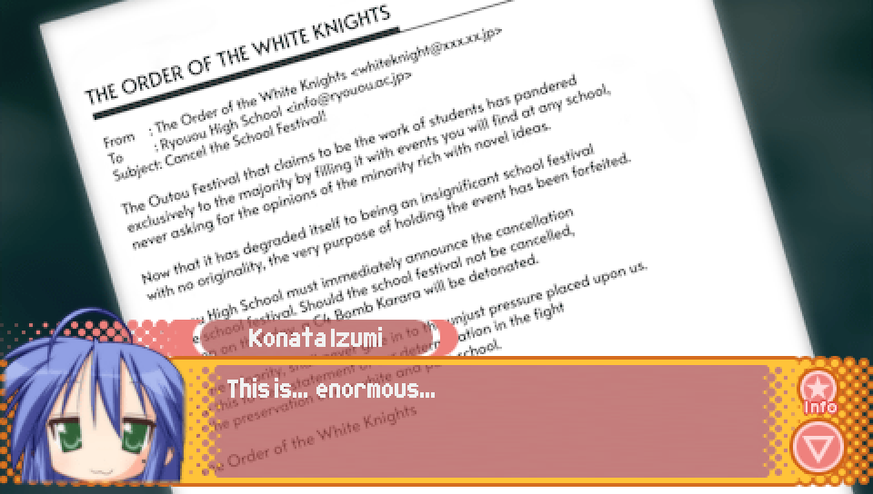
Konata's remark upon being shown the bomb threat email is in reference
to an infamous pornographic manga one-shot, Kuso Miso Technique,
created by Junichi Yamakawa. In it, a young man, Masaki Michishi,
meets another man, Takakazu Abe, in a public park and they then proceed
to have gay sex in the park restroom.
The specific line comes from a moment when Takakazu shows Masaki
his testicles, to which Masaki remarks that they are "enormous".
|
|
The sender of the bomb threat email, "The Order of the White Knights",
is a reference to "The Order of the Black Knights" from the series "Code Geass".
They are a rebel military group that fights against the Holy Britannian Empire.
|
|
The threat described in the bomb threat email of detonating a "C4 Bomb Karara"
is a reference to an ability used by the character Deidara from the "Naruto" series
in his fight against Sasuke. The ability, named "C4 Karura" involves Deidara creating
a gigantic doll of himself that releases microscopic bombs when ruptured.
These bombs can then enter the bloodstream of an enemy and disintegrate them upon their explosion.
The moment from the fight where the ability is used can be seen here from 7:56 to 9:36.
https://www.youtube.com/watch?v=oxw06D9yRD8&t=476s
|
|
The final line of the bomb threat email, stating that they are determined in their fight
"for the preservation of our white and pure school" is a reference to the catchphrase of the group
"Blue Cosmos" that appears in the anime "Mobile Suit Gundam SEED".
Their catchphrase is "for the preservation of our blue and pure world".
Murata Azrael, the leader of the Blue Cosmos.
|
|
In the Episode 0 route, when the protagonist runs by the "Trading Card Shop",
there are four posters on the window, each of which is a real advertisement.
They are as follows:
- Top left -- Da Capo II (visual novel)
- Top right -- Magical Girl Lyrical Nanoha StrikerS (anime series)
- Bottom left -- Belle Admiral (video game)
- Bottom right -- Shoukan Shoujo: Elemental Girl Calling (video game)
The most interesting of these posters is Belle Admiral, as it is a highly
obscure video game created by the developers of Lucky Star: Ryouou Gakuen Outousai, VRIDGE.
The only reference I could find to it online is its official website, which can be viewed here:
https://www.vridge.co.jp/homepage/contents/products/charaful/title/belle/index.html
Matthew Perry, one of the characters featured on the Belle Admiral poster.
His name is possibly in reference to the historical figure of the same name,
who served in the United States Navy and played an important role in Japanese-American
relations during the 1850s.
Jam Iroquois, one of the characters featured on the Belle Admiral poster.
Her name is possibly in reference to the English band "Jamiroquai".
|
In the Episode 0 route, when the protagonist says this odd remark
before falling asleep, it's a reference to a famous line from the original
Resident Evil game. It appears in the "Keeper's Diary", in which the author
is undergoing zombification, with the final diary entry being simply "Itchy. Tasty.".
The entire Keeper's Diary can be seen here.
https://www.youtube.com/watch?v=8_BuiCuyi_w
|
In the Episode 0 route, when the protagonist repeatedly says "I mustn't fall asleep"
while trying to stay awake during class, this is in reference to a moment from "Neon Genesis Evangelion"
where Shinji Ikari repeatedly tells himself that he "mustn't run away" from piloting the Evangelion as otherwise
the injured Rei Ayanami would have to pilot it instead.
The scene in question can be viewed here, though the wording differs slightly due to not being
the ADV dub of Neon Genesis Evangelion, which is what my translation uses as the basis for Evangelion references.
https://www.youtube.com/watch?v=2HU6R_8SyRs
|
In the Episode 0 route, when the protagonist fails to stay awake in class he says this line,
which is a reference to the ending of the anime "Ashita no Joe", in which boxer Joe Yabuki
smiles with content at having lived his life boxing until there was nothing left for him to give,
burning himself out to "pure white ash".
|
In Comic Festival, when Hiyori and Patty are freaking out over having sent the threat email,
Hiyori says this line in response to Patty saying she likes her.
"Watashi mo" means "me too" in Japanese, so it's as if she's saying the line in Japanese at first,
but then repeating it in English to further emphasize it.
|

In Comic Festival, when Hiyori and Patty are freaking out over having sent the threat email,
Patty suggests they could escape to outer space, to which Hiyori adds that they could join the
"Intergalactic Defense Force". This is the name of the organization to which most of the heroes
in the "Ultraman" series belong, including the titular "Ultraman" himself.
|
Immediately following Hiyori saying they could join the "Intergalactic Defense Force",
Patty adds that she'll be their chief medic. This is in reference to the fact that
Patty's previous voice actress, Satsuki Yukino, who voiced Patty in the two "Lucky Star: Moe Drill"
games released for the Nintendo DS and the drama CDs prior to the Lucky Star anime,
also voiced the character Pururu from the anime "Sgt. Frog". Pururu is the chief medic of the "Garuru Platoon".
Additionally, "Pekopon" is what the alien frogs from "Sgt. Frog" call Earth,
which is what Patty is referring to in the second line.
|
Alongside Patty's reference to her previous voice actress voicing Pururu,
Hiyori makes a reference to her previous voice actress, Ryouko Shintani, with this line.
Ryouko Shintani voiced Hiyori in "Shin Lucky Star: Moe Drill ~Tabidachi~", which was developed
before the Lucky Star anime.
This line is referencing the "Galaxy Angel" series, as Ryouko Shintani voiced the character Milfeulle Sakuraba
from that series. Interestingly, Milfeulle pilots a spaceship called the "Lucky Star", though this appears to
be merely an interesting coincidence.
|

If the protagonist chooses to attempt to leave the classroom without Hiyori and Patty noticing,
they'll have a conversation about using Hiyori's "spirit guide" that "stands" next to her.
This is a reference to the series "JoJo's Bizarre Adventure", in which people known as "stand users"
are able to wield visible manifestations of their soul called "stands".
These stands can have varying abilities, but Dio Brando, one of the primary antagonists of the series,
has a stand named "The World" which possesses the ability to stop time,
which is what Hiyori is referring to in the above line.
A clip from the "JoJo's Bizarre Adventure" anime where Dio uses The World's time-stop ability
can be seen here:
https://www.youtube.com/watch?v=NRBqnKjJ8AE
|
Following the above "JoJo's Bizarre Adventure" reference, the protagonist makes another reference to this series
by saying that trying to understand what Hiyori and Patty are saying would be "useless, useless, useless!"
This is a reference to a fight between Jotaro Kujo and Dio Brando in which Jotaro attempts to fight back against
Dio while The World is stopping time for 9 seconds using his ability to act for a 2 second period within that duration.
As Jotaro resists with his stand, Dio stays on the offensive, telling Jotaro that his attempts are futile by
repeatedly shouting the word "useless" at him.
The moment in question from the "JoJo's Bizarre Adventure" anime can be seen here:
https://www.youtube.com/watch?v=JFg5JfDb_iw
|

If the protagonist chooses to hide behind a desk and continue to watch Hiyori and Patty,
the two will discover a large styrofoam hammer and say the above lines in reference to it.
This is a reference to two different attacks performed by the "Magical Girl Lyrical Nanoha"
character, Vita, using her Device, Graf Eisen.
Vita using "Raketenhammer" can be seen here:
https://www.youtube.com/watch?v=rR8e30HMADc
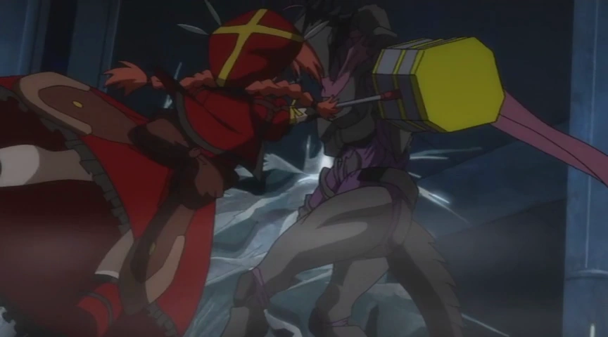
Vita using "Giganthammer" can be seen here:
https://www.youtube.com/watch?v=2l-E8YZ3uYk
|

This line from Hiyori upon noticing the protagonist is a reference to the "Ace Attorney"
series of video games.
|
As part of getting the protagonist not to snitch on them, Patty says this line.
It's a reference to a scene from Episode 4 of Code Geass, in which Lelouch vi Britannia,
under his alter ego Zero, commands Jeremiah Gottwald to free the captured Suzaku Kururugi,
who had been accused of murder.
Lelouch's command is successful due to the use of his Geass, "The Power of Absolute Obedience",
an ability which allows him to force people to follow his commands provided he makes direct eye-contact
with them while giving the command.
The subtitle in the above screenshot differs due to it being from the Crunchyroll translation,
though the "do everything in your power" phrasing appears to be more well-known among
fans of the Code Geass series.
|
Similar to the "watashi mo" line above, "oshizuka ni" just means "be quiet" in Japanese.
|
As mentioned in the translator's notes for Episode 1, this is a reference
to a poem taught to Japanese children about the three different approaches
taken by Japan's three great Daimyo, illustrated by three different responses
to a cuckoo not singing:
- "If the cuckoo does not sing, kill it" (Oda Nobunaga)
- "If the cuckoo does not sing, coax it" (Toyotomi Hideyoshi)
- "If the cuckoo does not sing, wait for it" (Tokugawa Ieyasu)
You can learn more here: https://blogs.transparent.com/japanese/the-three-major-daimy/
|
After being discovered by Hiyori and Patty, if the protagonist decides to run away,
he will be caught before he can escape. This leads to Patty saying this line from
the series "s-CRY-ed", in which the character Straight Cougar taunts the protagonist,
Kazuma Torisuna, for lacking in many things, but most notably in speed.
The scene in question is from Episode 18 from 16:55 to 18:36.
https://www.youtube.com/watch?v=ur1VKVmvodM&t=1015s
|
After being discovered by Hiyori and Patty, if the protagonist decides to run away,
he will be caught before he can escape and tackled by Hiyori and Patty. They then tell
the protagonist not to underestimate them, with Patty saying this line.
While I could not determine this for certain, this is likely another reference to one of the
roles performed by Patty's previous voice actress, Satsuki Yukino.
One possible candidate is "Arietta the Wild" from the 2005 video game "Tales of the Abyss",
who is described as a "God-General".
|
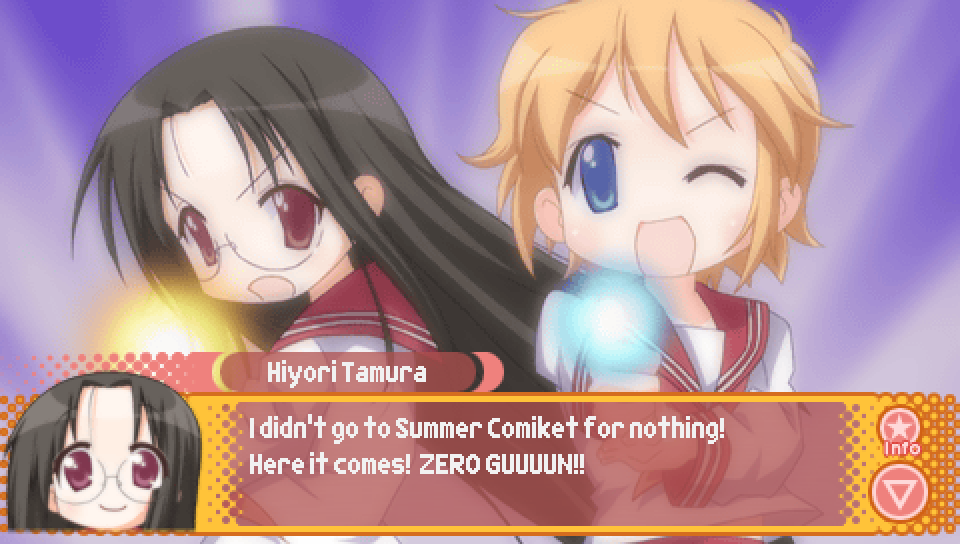
After being discovered by Hiyori and Patty, if the protagonist provokes them into fighting,
they will use their "trump card", which ends up being them making the above poses.
Hiyori's line about how she "didn't go to Summer Comiket for nothing!" is a reference
that also appeared in the Episode 1 translator's notes. It's a nod to the tagline said at the end of the
next episode previews in the "YuYu Hakusho" anime: "the other world isn't watching for nothing!".
https://www.youtube.com/watch?v=enbMoV4TOvU
Additionally, the "zero gun" is a reference to the "Spirit Gun", the signature technique of
YuYu Hakusho's protagonist, Yusuke Urameshi. The word "spirit" in Japanese is pronounced "rei",
which also happens to be a way of saying "zero" in Japanese, which is why Hiyori calls it the "zero gun".
Meanwhile, Patty's "turtle trap ha" is a reference to the famous "kamehameha" move from Dragon Ball,
and is protagonist Goku's signature move. The "turtle" part comes from the the Japanese word
for turtle being "kame", the "trap" part comes from the Japanese word "hameru" which means "to trap",
and the ha is just "ha". So it's kame + hame(ru) + ha = turtle + trap + ha.
Note that this is not the actual etymology of the "kamehameha".
As for it being the "10x version", Dragon Ball has a variant of the "kamehameha" known as the
"10x kamehameha", which as the name implies, is a much more powerful version of the base "kamehameha".
Lastly, note that the pose Hiyori is doing more closely matches the pose for the "kamehameha",
while the pose Patty is doing more closely matches the pose for the "spirit gun".
This is intentional and is what the protagonist is later referring to when he says they've got
their poses flipped around.
|
After being discovered by Hiyori and Patty, the protagonist can decide to
"invoke the human instrumentality project". The Human Instrumentality Project is the name of the
secret objective being pursued by the organization "NERV" in "Neon Genesis Evangelion".
|
As part of the sequence of "Neon Genesis Evangelion" references initiated by the protagonist
to distract Hiyori and Patty, the protagonist says this line.
While the line is not particularly remarkable, used at various points when NERV goes into battle against Angels,
it is a line associated with Neon Genesis Evangelion nonetheless.
|
As part of the sequence of "Neon Genesis Evangelion" references initiated by the protagonist
to distract Hiyori and Patty, Patty says this line.
This line is based on a moment from Episode 19 around the 16:20 mark,
where Shinji returns to NERV after running away earlier in the episode, vowing never to pilot an Eva again.
However, after seeing that he was in need to stop an Angel attack,
he begs his father to let him pilot Unit-01 once more.
|
As part of the sequence of "Neon Genesis Evangelion" references initiated by the protagonist
to distract Hiyori and Patty, the protagonist says this line.
A.T. fields, short for Absolute Terror fields, are a type of protective barrier used by
Angels and Evangelion, with the specific wording of "A.T. field, full power" being commonly
associated with the activation of such fields by Eva pilots.
|
As part of the sequence of "Neon Genesis Evangelion" references initiated by the protagonist
to distract Hiyori and Patty, Patty says this line.
This is the same moment being referenced as when the protagonist says he "mustn't fall asleep"
in Episode 0 (discussed above), except this time it is properly quoted.
|
As part of the sequence of "Neon Genesis Evangelion" references initiated by the protagonist
to distract Hiyori and Patty, Hiyori says this line.
This is referencing a moment from Episode 6, around the 15:20 mark, where Shinji tells Rei
that this may be their last day of life due to the possibility of dying in battle.
Rei then insists Shinji won't die as she will be protecting him.
|
As part of the sequence of "Neon Genesis Evangelion" references initiated by the protagonist
to distract Hiyori and Patty, there's this exchange between Hiyori and Patty.
As discussed in the translator's notes for Episode 1,
these two lines are in reference to a scene from the end of Episode 6,
where Shinji, after forcing Rei's Evangelion open after it took considerable damage, finds her
unharmed. Still, he ends up crying because he was worried about her, leading to the above exchange.
The scene in question can be viewed here, though the wording differs slightly due to not being
the ADV dub of Neon Genesis Evangelion, which is what my translation of these lines are based on.
https://www.youtube.com/watch?v=CQj4_8geHd0
|
When Hiyori and Patty first have the protagonist pinned down in order to blackmail him,
this exchange takes place. It's all a reference to a famous scene from the first "Yu-Gi-Oh!"
series where protagonist Yugi is able to defeat Haga via a maneuver that allows him to attack Haga
repeatedly, continuing long past the point where Haga has lost all his life points out of rage.
Yugi is eventually stopped by Anzu grabbing hold of him, to which he demands she let go of him.
Due to the scene's notoriety, Yugi's exclamation of "HANASE!" (let me go!) is often referred to by
putting stars between each syllable, making "HA☆NA☆SE!", possibly in reference to how the series name
"Yu-Gi-Oh" is also written with stars between each syllable in Japanese, "遊☆戯☆王".
The "life points dropped to zero" line comes directly from Anzu telling Yugi to stop
as there's no longer any sense in continuing to attack Haga.
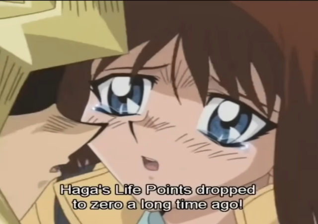
Lastly, the "it's our turn forever" line isn't something that's directly said in this scene,
but is instead Japanese internet slang derived from this scene, referencing how
Yugi's turn was able to go on seemingly indefinitely had Anzu not intervened.
People will often comment this during moments in turn-based games where a player has set themselves
up such that their turn is able to last a very long time without other players being able to act,
or fighting games when someone is pulling off a very long combo that their opponent can't break free from.
The Yu-Gi-Oh scene in question can be viewed here:
https://www.youtube.com/watch?v=RqmPknhHEVE
|
|
While Hiyori and Patty are pinning the protagonist down, he is implied
to accidentally touch Hiyori inappropriately as he struggles to get free,
leading Hiyori to make this questionable remark.
However, this line is just Hiyori referencing a famous moment from "Mobile Suit Gundam"
where Bright Noa slaps protagonist Amuro Ray, leading to Amuro responding that
not even his own father would hit him.
The moment in question can be viewed here:
https://www.youtube.com/watch?v=58pNa3o6F60
|
When Kou apologizes to the protagonist for Hiyori and Patty's actions,
if he chooses to say "I can't take it!", the scene that plays out is a reference
to a moment from JoJo's Bizarre Adventure where the character Esidisi cries hysterically
after losing part of his arm in a fight against Joseph Joestar.
The moment in question can be seen here:
https://www.youtube.com/watch?v=ekIfv9y4SUE
|
When Kou apologizes to the protagonist for Hiyori and Patty's actions,
if he chooses to say "LIES!", the scene that plays out has a few different
references to the "Higurashi" series.
The line "LIES!" itself is a famous exclamation associated with Higurashi,
with various characters shouting it with an intense expression throughout the story.
This includes the character Shion Sonozaki, whom is voiced by Patty's previous
voice actress, Satsuki Yukino. She also voices Shion's twin sister, Mion.
With Patty being voiced by Nozomi Sasaki in this game, this is what she means
by being her "successor" as Nozomi is succeeding Satsuki in the role of Patty.
Mion (left) and Shion (right) Sonozaki as they appear in the original Higurashi visual novel.
Though for the specific face Patty makes when saying "LIES!",
it is likely based on this specific face made by the character Rena Ryuuguu when saying it.
|

Following the above "Higurashi" references is this line from Hiyori and a CG
where Patty laughs hysterically.
The line about being pushed down a well is a reference to how Shion ends up killing
several people in exactly this fashion.
One such scene depicting these murders can be seen here:
https://www.youtube.com/watch?v=rrsi0jvIOiQ
As for the CG, it's another notable moment from Higurashi involving Shion.
In a tense conversation with male protagonist Keiichi Maebara, he comes to the realization
that Shion would've been with the mayor of their village, Kiichirou Kimiyoshi, just before
he disappeared. In response, Shion laughs hysterically, which is what Patty's laughing is based on.
In the PS2 version of Higurashi exclusively, this scene is accompanied with a CG depicting
Shion's laughter by filling the screen with the Japanese onomatopoeia for laughter.
The CG seen in Ryouou Gakuen Outousai is based on this specific aspect of Higurashi's PS2 version.
The resemblance to the Ryouou Gakuen Outousai CG is more apparent when you compare it to the
original CG featured in the Japanese version of Ryouou Gakuen Outousai (seen below), as you can
see that the same Japanese characters are used in both images.
The moment in question can be viewed here:
https://www.youtube.com/watch?v=kVcGuqJh4LU
|
|
When Kou asks the protagonist for ideas on how Hiyori and Patty
can have their own event in the school festival, if the protagonist
suggests they could make more threats, he'll end up saying this line.
It's a reference to chapter 28 of the "JoJo's Bizarre Adventure" manga,
"The Hero of the 77 Rings", where Jonathan Joestar in a fight against Bruford,
finds himself underwater in a lake and needing to breathe. However, instead of
attempting to swim to the surface for air, Jonathan recalls some childhood advice from his father
that sometimes it's better to think in the opposite direction, doing what seems counterintuitive,
and swims to the bottom of the lake to find pockets of air underneath rubble.
|
Immediately following the above "JoJo's Bizarre Adventure" reference,
Patty will smack the protagonist with a paper fan, leading to this interaction.
This is once again in reference to Patty's previous voice actress
being Satsuki Yukino, as one of the characters she also played is
Kaname Chidori from the anime "Full Metal Panic", who is well-known
for smacking the protagonist, Sousuke Sagara, with a paper fan due to
his absurd behavior.
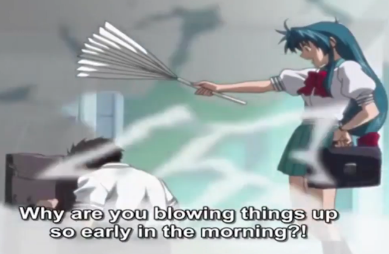
A compilation of clips from "Full Metal Panic" of Kaname getting angry,
including many moments of her using her paper fan, can be viewed here:
https://www.youtube.com/watch?v=z2dml9kGNLI
|
When Kou asks the protagonist for ideas on how Hiyori and Patty
can have their own event in the school festival, if the protagonist
suggests looking for some inspiration, Patty will suggest the "holy lands",
leading to Hiyori and Kou saying these two lines.
The reason why they say Harumi and Ariake is because these are two districts in Tokyo
where the famous doujinshi convention Comiket has been held, with Ariake being the location
it's been held since 1996 to the present day, and Harumi being where it was held from
1981 to 1995.
|
Following the above reference to Comiket, Kou makes reference to "Comptiq",
which is a Japanese computer game magazine, notably being the one that
Lucky Star was serialized in.
|
In the scene where everyone travels to Akihabara, the store they go to, Animate,
is a real chain of stores primarily located in Japan that sells anime, manga, and video games.
Animate's flagship store in Ikebukuro.
|
The background for the inside of the Animate store contains a poster featuring Konata, Kagami, and Tsukasa
at the beach. This is actually artwork that was made for a poster to promote the 2005 Nintendo DS game and
first Lucky Star game, Lucky Star: Moe Drill.
|
While at the Animate store in Akihabara, the two store managers
the protagonist runs across are two of Animate's mascots, known as the anime tenchou,
meaning "animation store manager".
Though many will already be familiar with Meito Anizawa from his appearance in the
Lucky Star anime, it often comes as a surprise for many to learn that he and his fellow
anime tenchou are their own characters that exist independently of Lucky Star.
With that said, Anime Tenchou has crossed over with Lucky Star several times, going all the way
back to "Lucky Star: Moe Drill" in 2005. Anime Tenchou as a result is arguably more well-known for being
in Lucky Star than it is for being the mascots of Animate, at least outside of Japan.
The anime tenchou cast cheering Tsukasa on in "Lucky Star: Moe Drill".
Though there isn't very much Anime Tenchou media in general, much less translated into English,
there is a short OVA advertising Animate that features the Anime Tenchou cast.
It can be viewed here:
https://www.youtube.com/watch?v=GwsxYtxeStY
|
Upon Meito Anizawa explaining how he and Guy Denki were able to deduce
that this was the protagonist's first time visiting Animate, Patty says this line.
It's a reference to a moment from chapter 4 of "Phantom Blood" in "JoJo's Bizarre Adventure",
where Dio Brando forcibly kisses Jonathan Joestar's girlfriend, Erina Pendleton, stealing her first kiss from him.
In response to this, some fellow bullies admire Dio for his boldness.
The anime adaptation of the scene can be viewed here.
https://www.youtube.com/watch?v=wLoRiTk-awo
|
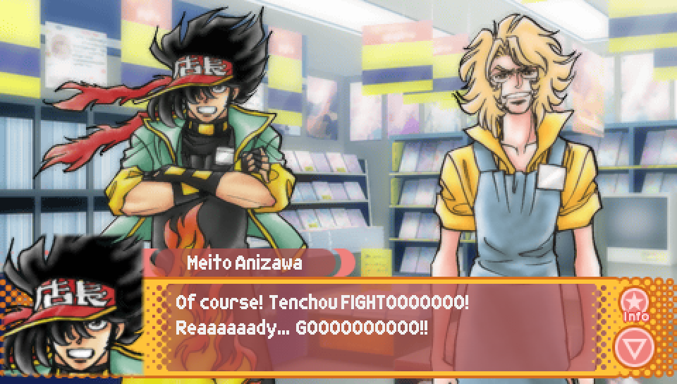
This line from Meito Anizawa is a reference to a line commonly said throughout "Mobile Fighter G Gundam",
that line being "Gundam fight! Ready, go!". This line is said before, as you can expect, fights between gundam.
Additionally, Tomokazu Seki, who voices Meito Anizawa, also voices the protagonist of
"Mobile Fighter G Gundam", Domon Kasshu.
A compilation of moments from "Mobile Fighter G Gundam" where the famous line is said can be viewed here:
https://www.nicovideo.jp/watch/sm18652432
|
Following the above "Mobile Fighter G Gundam" reference, Meito makes another reference
to his voice actor playing Domon Kasshu with this line.
At the start of many of the show's earlier episodes as part of the opening narration,
Domon shows a picture of his older brother, Kyoji Kasshu, asking the viewer if they have seen him.
|
Meito Anizawa's recommendation to the protagonist, "Moderately-Sized Windup!",
is a parody of the baseball manga "Big Windup!".
Additionally, referring to it as "representing Neo Sportsmanship" is another reference
to "Mobile Fighter G Gundam", as it is set in a universe where there are various space colonies
based on countries from present day Earth but with the prefix "Neo" attached to them, such as Neo Japan,
Neo France, Neo America, etc. The fighters that appear in the series come from these various colonies.
|
Guy Denki's recommendation to the protagonist, "The Familiar of Rose",
is a parody of the light novel series "The Familiar of Zero".
|
If the protagonist chooses to go with Meito's recommendation, it'll lead to a conversation
about character shipping where Patty ends up saying this to Guy Denki. It's a reference
to Guy Denki's voice actor, Shin-ichiro Miki, often being cast in handsome young man roles and as a result
is prominent in BL (Boy's Love) media. There are apparently rumors as well that Shin-ichiro has actually said
"BL has soul" at some point, which is what Patty is likely alluding to.
|
If the protagonist chooses to go with Meito's recommendation, Guy Denki will end up
running out of the store crying. When the protagonist asks if someone should chase after him,
Meito says this. It's a reference to a famous line from the Japanese period drama "Ooedo Sousamou".
The line refers to the idea that those who fight while hiding their identity will have nobody to mourn
for them should they die in battle as they will die in secret.
A clip of the line being said in "Ooedo Sousamou" can be seen here:
https://www.youtube.com/shorts/nQs60w7DY0Y
|
If the protagonist chooses to go with Guy's recommendation, Hiyori and Guy
will quote some of the lyrics to the opening theme of "Kamen Rider Black".
The opening can be viewed here:
https://www.youtube.com/watch?v=h9w0yTpim6M
|
When the protagonist finds some spare change in his pockets
upon seeing that Animate has trading card machines,
he comments on what a coincidence it is before saying this.
The quote comes from the manga "xxxHolic" and is said by the character
Yuuko Ichihara in her first meeting with protagonist Kimihiro Watanuki,
using the Japanese word "hitsuzen", which can be translated to "inevitability",
to explain that him entering her shop was not due to chance.
Additionally, Watanuki ends up working at Yuuko's shop as a part-timer,
which is why the Ryouou Gakuen Outousai protagonist had also heard this
from a lady at a part-time job he had.
|
The background for the trading card purchasing menu has three different trading card machines,
each with a different picture on them. You might recognize these as being the cover art for the first
three manga volumes of Lucky Star.

|

In this line from the protagonist before running out of Animate
to hurry back to the school, he directly makes reference to "Eyeshield 21",
a manga series based on American football. In it, protagonist Sena Kobayakawa
plays as a running back for his school's football team, wearing jersey number 21
and an eyeshield on his helmet.
|
When asked if there's anyone he has in mind that could help get Hiyori's event
approved for the school festival, if the protagonist says Miyuki,
Kou will end up saying this. While it may seem like just an ordinary statement,
the specific wording used in Japanese, "kore ha hidoi", is actually a Japanese internet meme.
It originates from the 1996 Sega Saturn game, "Daibouken: Saint Elmo's no Kiseki",
an RPG that has gained a reputation among Japanese people for having poor quality visuals
and overall not being a very good game. In the opening scene, the game's protagonist
looks out into the harbor and sees a boat that has been shipwrecked, leading to the very first line of dialogue
in the game being simply "this is terrible". Due to it ironically being a fitting description of the
game itself, this has become an infamous line.
The opening scene from "Daibouken: Saint Elmo's no Kiseki", including the infamous line, can be seen here:
https://www.youtube.com/watch?v=7y8x7OCX0eg&t=58s
Additionally, the line saw a resurgance in popularity in the 2000s on the Japanese TV Channel
"NHK Educational TV" due to an infamous scene involving Shouko Haida and puppet character Nyanchuu,
where Shouko accidentally pours eggs into a bowl of rice such that it started to overflow and spill out.
Nyanchuu's reaction of "this is terrible" in response to her blunder put the line back into
the public consciousness, and led to it becoming a meme in its own right.
The moment in question can be viewed here:
https://www.youtube.com/watch?v=-1l3LLWQKyY
|
When asked if there's anyone he has in mind that could help get Hiyori's event
approved for the school festival, if the protagonist says Kuroi Sensei,
Patty will end up saying this about her.
This is a reference to Nanako Kuroi's previous voice actress, Masumi Asado,
who voiced her in the Lucky Star Drama CDs and Nintendo DS games.
Masumi Asado has the nickname "Wild Eagle", which is why Patty is calling her that.
|
When discussing what they could do to get Konata to agree to helping
make Hiyori's event for the school festival a reality, Kou says this line.
It's a reference to the character Kaede Nagase from the series "Magical Teacher Negima!",
who often ends sentences with "de gozaru" in order to sound like a ninja from feudal Japan.
"Nin-Nin" is also a catchphrase of Kaede's.
Both of these characteristics of Kaede's speech can be heard in this clip.
https://www.youtube.com/watch?v=t5BIbwGc8As
|
When discussing what they could do to get Konata to agree to helping
make Hiyori's event for the school festival a reality, Hiyori suggests
she could offer up one of her figures, leading to this exchange.
The "Evil Goddess" figure Patty is referring to is that of the character
KOS-MOS that came with the premium box set to the 2004 video game "Xenosaga Episode 2".
The figure became infamous for its poor paint job and overall bad quality and is jokingly
referred to as "Evil Goddess MOCCOS".
|

When discussing what they could do to get Konata to agree to helping
make Hiyori's event for the school festival a reality, Kou suggests
that they could offer Konata a "butler for a day" pass, allowing Konata
to have the protagonist as a butler for a day. When Hiyori explains
that he could learn to be a butler by playing a certain game,
the protagonist explains that he doesn't have the necessary clothing.
The general premise of someone becoming someone's butler in exchange for a favor
is a reference to the basic premise of the manga "Hayate: The Combat Butler",
in which protagonist Hayate Ayasaki becomes the butler of Nagi Sanzenin,
a wealthy 13 year old girl, in order to pay back a large debt she paid for him so that
he wouldn't be murdered by the Yakuza. Additionally, like the protagonist, he also didn't
have a butler outfit and had to have one provided to him.
|
In the discussion about offering a "butler for a day" pass to Konata,
Hiyori says this when asked about what'd be good about having a butler.
In case you don't know, "Ojousama" is a title similar to "my lady" and is used
as a polite way to address younger women and usually implies a refined and fancy nuance.
So, in this case, being called "Ojousama" by a butler is appealing to Hiyori
because it represents the sort of pampered treatment you'd get from a butler.
|
|
In the discussion about offering a "butler for a day" pass to Konata,
the game Hiyori suggests the protagonist could learn from, "Butlers & Maids: You & Me",
features art of Lucky Star characters as maids. This art comes from the boxart used on the
"Lucky Star: Moe Drill DX Pack", the special edition of "Lucky Star: Moe Drill" that came with
extra physical goods in addition to the game.
|
|
When Hiyori reveals that she used alternative means to obtain her prized figure
that she intends to offer to Konata as a bribe, despite it being an adults only figure,
Patty responds with this line.
The specific thing she said in Japanese "osoroshii ko", which means "terrifying child/girl",
is a famous line from the girl's manga "Glass Mask".
Upon seeing 13 year old protagonist Maya Kitajima act out a three hour long play from memory without making
any mistakes, veteran actress Chigusa Tsukikage shouts this, shocked by such an incredible display of ability
for someone so young.
|
|
This line Konata says upon entering the first year's classroom after being called over by the protagonist
is a reference to a line frequently said by the character Yuko Asahina in the dating simulation game
"Tokimeki Memorial". Specifically, at a certain point in the game, she'll start saying this at the start of
every date you go on with her as an excuse for why she was late. The odd nature of the excuse,
given that a train being crowded doesn't mean the train was late, as well as the frequency with which
she says it has led to it becoming a very memorable and iconic line in the game.
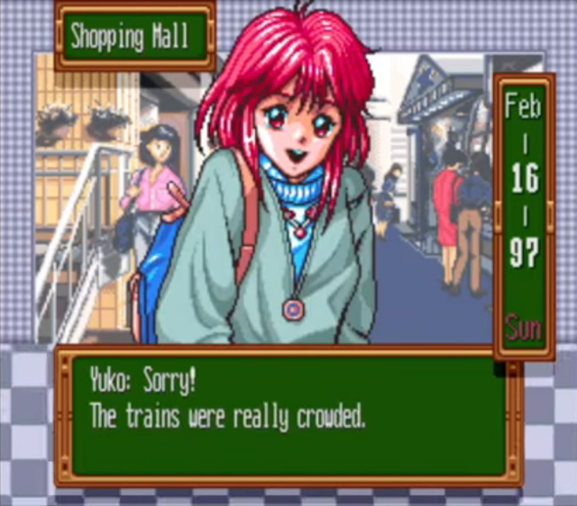
|
When Konata meets Kou upon entering the first year's classroom, the two have this interaction,
realizing that they had first met each other at the arcade.
This is a reference to a pair of comic strips from volume 6 of the Lucky Star manga,
where Kou is beaten by Konata (and Yutaka) in a fighting game at the arcade.
|
When trying to convince Konata to help, Hiyori asserts that she'll
even pay with her body, followed by Patty saying she will offer herself up as well.
Konata then responds by asking for a can of hot coffee.
While I could not find confirmation of this, I believe this is likely a reference to the infamous "hot coffee"
incident that occurred with the 2004 videogame "Grand Theft Auto: San Andreas". It was a controversy surrounding
an unused minigame contained within the game that depicted the game's protagonist CJ engaging in sexual
intercourse with his girlfriend. Though it was unused and not accessible in the game,
a mod known as "hot coffee" re-enabled it, generating a worldwide controversy as its existence became
known to the public. The mod is so-called because what did make it into the final game is implied sexual activity
that happens out of view when CJ's girlfriend invites him inside for coffee, which is where the unused minigame
was meant to occur.
Hiyori and Patty's offer to pay with their bodies, which does often get used to imply allowing one's body to be
used for sexual gratification, combined with Konata's reference to coffee--specifically hot coffee--seems to be a
nod to this infamous event in gaming history. Additionally, the specific Japanese line that I have chosen to translate
as "YOU DON'T MEAN...!?" is "盛るの！？". Literally it is just "you'll serve (us with coffee)", but the kanji used is also
associated with sexual activity or being "in heat", meaning the line is implying that Hiyori and Patty are seemingly
interpreting Konata's request for coffee as being an invitation to sex.
No footage or screenshots related to the "Hot Coffee" mod will be included here due to its sexually explicit nature
and due to me not being entirely sure whether this was actually intended to be a reference or if it's just a coincidence.
|
Once again, this is just an instance of Patty saying something in English,
followed by her saying it in Japanese. "Naze desu ka?" means "Why?" in Japanese.
|
When Hiyori asks if Konata will be able to help in getting her event approved,
first Konata says yes and that it's no problem, but when asked a moment later says
it'll be too difficult, leading to Hiyori saying the above line.
It's a reference to an iconic line and moment from Part 3 of "Jojo's Bizarre Adventure": "Stardust Crusaders".
The character Polnareff explains to Jotaro Kujo and the others that he tried to confront Dio,
who was at the top of a staircase, but whenever he would take a step up the stairs, he kept finding himself
descending the stairs instead. Polnareff figures it was the work of Dio's Stand: The World.
In Japan, Polnareff's explanation became somewhat of an internet meme, where parts of his explanation
will be quoted in various scenarios where characters are explaining unbelievable things that have occurred.
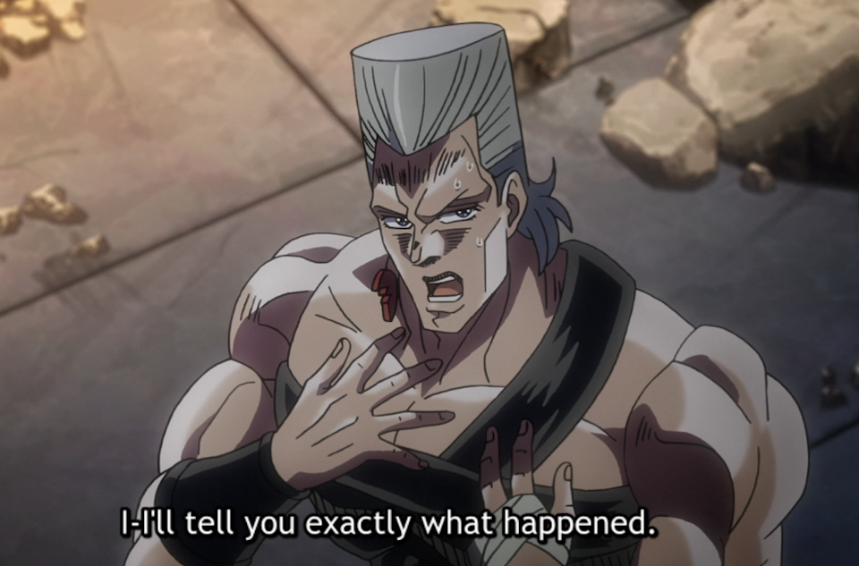
In the anime adaptation of "Jojo's Bizarre Adventures". It appears in the 45th Episode of the "Stardust Crusaders" arc.
The scene where Polnareff tries to confront Dio at the stairs can be seen here:
https://www.youtube.com/watch?v=c3lB9NLwhFw
A clip of Polnareff explaining to Jotaro what happened can be seen here. I could only find clips
of this moment in particular in Japanese, but the YouTube automatic subtitles are accurate enough to get the gist.
https://www.youtube.com/watch?v=nsJ6J6wZOKw
|
|
In response to Hiyori's reference to Polnareff's explanation, Konata follows it up with this line.
It's a reference to a line said by the character Sleggar Law in "Mobile Suit Gundam".
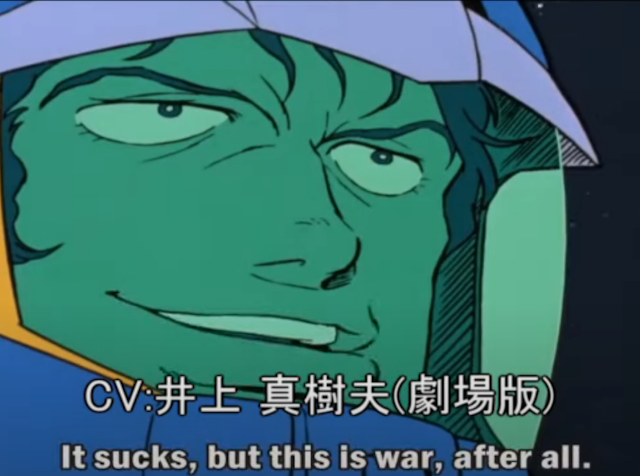
A clip showing two different instances of Sleggar saying the line, each with a different voice actor,
can be seen here.
https://www.youtube.com/watch?v=rxVw5qKx7T8
|
|
If the protagonist says that the reason for the situation around getting Hiyori's event approved
being "complicated" is because Konata is being possessed by an evil spirit, Hiyori will get riled up and say this line.
Hiyori is partially quoting lyrics from the song "Let's Go! Onmyouji" from the fighting game
"Power Instinct Matrimelee", the fifth entry in the "Power Instinct" series.
When the game got a port to the PS2 in 2006, the song would go on to become a viral hit on the
Japanese internet after the music video for the song was uploaded online.
Ayakashi, by the way, are a type of Japanese youkai that appear above the surface of water during shipwrecks.
The music video can be seen here:
https://www.youtube.com/watch?v=b-nUIR1Mhnw
|
When Hiyori gets riled up after the protagonist suggests that Konata might be being posssessed
by an evil spirit, she shows off her "costume change" ability, allowing her to change into cosplay
with incredible speed.
This whole sequence is copied nearly verbatim from the transformation sequence seen in
the tokusatsu show "Space Cop Gavan", specifically that seen in Episode 9 of the show.
The transformation sequence can be seen here.
Note that the YouTube video includes English subtitles in the closed caption options:
https://www.youtube.com/watch?v=CVy56bR-xcM&t=936s
|
Following the above reference, Hiyori says this to exorcise the evil spirit from Konata.
Hiyori is quoting a spell used by the protagonist of the anime "Shounen Onmyouji",
Masahiro, in order to exorcise spirits.
|
Following the above reference, these two lines are in reference to the character Mokkun
from the anime "Shounen Onmyouji", who is a mononoke that accompanies the protagonist, Masahiro,
who as Kou's line implies, often rides on his shoulder.
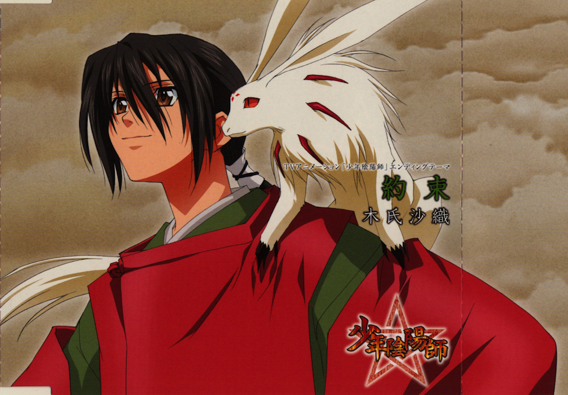
Mokkun is not his actual name, but is instead a nickname given to him by Masahiro,
derived from him being a mononoke, a type of spirit in Japanese folklore.
So that is why in Ryouou Gakuen Outousai it is "Yokkun" as it is applying the same sort
of nickname but to a youkai instead.
|
If the protagonist says that the reason for the situation around getting Hiyori's event approved
being "complicated" is because Konata is an alien, Patty will get riled up and put on a nurse outfit,
leading to this exchange.
As mentioned above, this is a reference to Patty's previous voice actress, Satsuki Yukino,
being the person who voices Pururu from the anime "Sgt. Frog", who is a medic.
The "sergeant" Hiyori is referring to is the protagonist of the series, Sergeant Keroro.
|
This line and CG seen when Hiyori and Patty start to lose hope after Konata explains why
their event is not likely to pan out is another reference to Esidisi's hysteric crying after losing his arm
in "Jojo's Bizarre Adventure", as described previously.
|
During their infiltration into the school, Hiyori and Patty talking to each other
as if they are using radio communication is a general reference to the codec calls featured in the
"Metal Gear Solid" video game series. However, this particular line from Patty is based on a notable
line from "Metal Gear Solid 3: Snake Eater". It is a line told to protagonist Naked Snake by "The Boss",
which he ends up recalling during his final face off against his rival "Revolver Ocelot",
helping him to stay focused.
This encounter between Snake and Ocelot can be viewed here, with the line in question playing at 2:50.
https://www.youtube.com/watch?v=1PCpUEtl1x4
|
During their infiltration into the school, after Hiyori and Patty stop with the above "Metal Gear Solid" reference,
they immediately start imagining themselves in the above outfits. These are taken directly from the outfits
worn by the group of art thieves known as "Cat's Eye", from the manga and anime series of the same name.
|
During their infiltration into the school, when Hiyori and Patty are in the home economics clubroom,
Hiyori says that the contest that has been set up seems to not be a cooking contest, but instead a
"reaction contest". She then goes on to say that the kinds of reactions they may have would
include transformations and unleasing beams of light.
This is in reference to two series, "Mister Ajikko" and "Yakitate!! Japan", both of which feature
characters having intense reactions to eating food, including the aforementioned beams of light
and transformations.
As discussed previously in the notes on Episode 1, these kinds of reactions in "Mister Ajikko"
come from the character Genjirou Murata when eating something delicious,
shouting "UMAIZOOOOOOO!!" (DELICIOUS!!).
One such intense reaction from Genjirou Murata can be seen here:
https://www.youtube.com/watch?v=L5Q4GJpog-0
As for "Yakitate!!" Japan", you have the character Ryou Kuroyanagi, who has various intense
pun-based reactions upon judging people's bread, such as spinning rapidly and imitating
the turtle kaiju "Gamera" upon eating a turtle shaped bread.
The moment in question can be viewed here:
https://www.youtube.com/watch?v=VhzQ9mQbNr0&t=102
|
Following the above reference in the home economics clubroom,
Patty makes this comment about an egg-cracking machine.
This is a reference to a well-known episode of the anime "Sazae-san",
in which the family gets a machine that can automatically crack eggs,
which they greatly enjoy using throughout the episode.
The episode of "Sazae-san" can be viewed here:
https://www.youtube.com/watch?v=yMuXVpUIXmU
Additionally, the episode went on to be somewhat of an internet meme in Japan.
There are videos on NicoNico of people editing the audio from the episode over other media,
such as this edit that uses footage from "The Melancholy of Haruhi Suzumiya".
https://www.nicovideo.jp/watch/sm955859
|
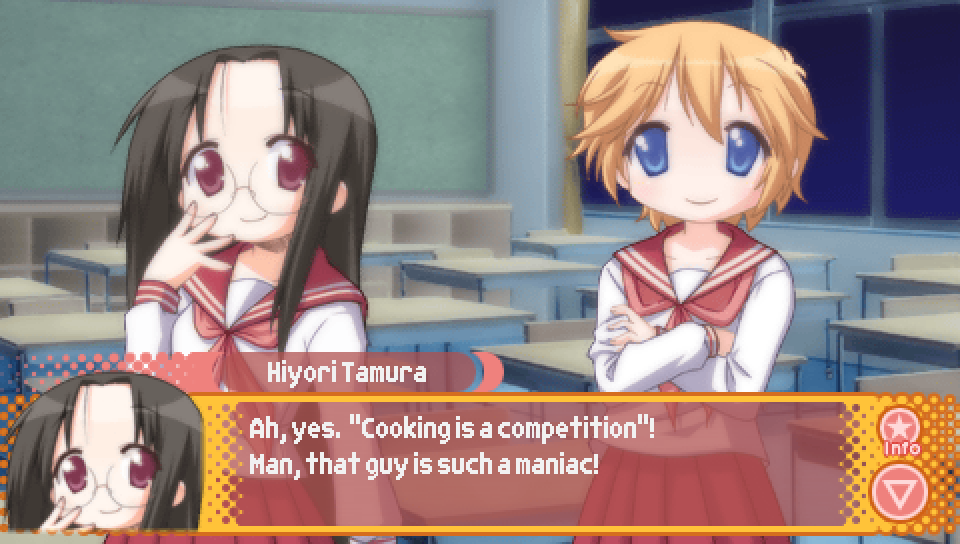
When talking about the cooking that would be part of the home economics club's event,
Patty mentions some dishes that could appear, with Hiyori alluding to Patty's dishes
being in reference to something.
Patty was referencing the manga "Iron Wok Jan", in which the titular character Jan Akiyama
has an insane obsession with being the best chef and will do anything in order to win.
The dishes Patty lists are dishes that Jan made as part of a competition for young chefs,
and are examples of the lengths Jan is willing to go to.
The "meal made with suspicious mushrooms" is in reference to a mushroom soup Jan made as his
first dish in the competition that he made specifically such that the mushrooms would combine
in such a way that it would have a hallucinogenic effect on the judges, making them obsessively
crave his soup.
The "dessert made with pigeon blood" is a reference to Jan's final dish in the competition
in which he brutally kills tons of pigeons in front of the audience and drains their blood
in order to make blood eggs as a highly unconventional dessert dish.
As for Hiyori's line, "Cooking is a competition" is Jan's catchphrase,
embodying his highly competitive attitude towards cooking.
|
During their infiltration into the school, while Hiyori and Patty are in the classroom with
a champagne glass and juice being used to represent wine, they have the above exchange,
making reference to two manga series based around host clubs.
For those who may not know, a host club is a venue where women can go to receive
male entertainment in the form of spending time with a male "host" who will do things
like converse with them over alcohol or hold themed parties for them.
The first manga series being referenced is "Ouran High School Host Club",
which the festival event is being named after.
The second manga series being referenced is "Yaou". "Yaou" (夜王) means "Night King" in Japanese,
so Patty is referring to it via a slightly different name by calling it "King of the Night" instead.
|
During their infiltration into the school, while Hiyori and Patty are in the flea market classroom,
Hiyori says this line. A "furima" is just a Japanese abbreviation for the words "flea market",
but for the scene to make sense I had to leave it untranslated.
|
During their infiltration into the school, while Hiyori and Patty are in the flea market classroom,
Patty says this line. Just to make this clear, "nomi no ichi" is the Japanese word for "flea market"
and literally means "flea market". That is, "nomi" is the word for "flea" and "ichi" is the word for "market"
in Japanese. So Patty is saying that when she's saying the English "flea market",
she means as in the synonym to "nomi no ichi" in order to help disambiguate it with the English "free market".
|

To further add to what Miyuki says here following the "flea market" vs "free market"
conversation, "wasei-eigo" is a Japanese word meaning "Japanese-made English" and is used
to refer to instances where Japanese uses English words in ways that do not match how those words
are used in proper English. This can either be in the form of English words that get used differently
in Japanese, or entirely original English terms that are not terms people actually use in English.
When Miyuki calls "free" a "wasei-eigo", she is referring to the former definition, as Japanese
tends to use the word "free" to mean "allows for any", which is not what "free" tends to imply in English.
For example, in Japanese the word "free size" (フリーサイズ) is used to refer to what would be called
"one-size-fits-all" in English. However, if you were to say "free size" in English,
people would probably try to interpret it as a size that does not cost any money.
As for the latter definition, one example would be "my pace" (マイペース), which is used
to describe people who do things at their own pace with no sense of rush, even if it
comes at the cost at not having proper consideration for other people who may be waiting.
While the term is made up of English words, you would be hard-pressed to find someone
using the term "my pace" in an English context to refer to such a person. That is,
you wouldn't hear someone say "that person is very my pace".
|
In the fortune-telling classroom, Hiyori and Patty end their discussion about the room with these lines
as they move on to other rooms.
This is a bit lost in translation, but the specific wording used in Japanese "gangan ikouze!" is the name
of a tactic option in the "Dragon Quest" video game series, which when applied to a party member will result
in them using their most powerful attacks with no regard for preserving their magic points.
In Japan, "gangan ikouze!" is strongly associated with the Dragon Quest series as a term,
however it's official English translation, "show no mercy" unfortunately does not
have the same reputation and merely is just the name of the tactic with no further notoriety.
|
These two lines said when Hiyori and Patty realize that they are starting to miss
late-night anime due to being at the school are references to the anime "Sayonara, Zetsubou Sensei".
Hiyori's previous voice actress, used in the "Shin Lucky Star: Moe Drill ~Tabidachi~" game for Nintendo DS,
Ryouko Shintani, voices the character Nami Hitou from "Sayonara, Zetsubou Sensei".
As for the lines themselves, Hiyori and Patty shouting "I've lost all hope!"
is a reference to a moment from the beginning of the series where the titular character
Nozomu Itoshiki is in despair after his suicide attempt failed due to the main character,
Kafuka Fuura, breaking the rope he tried hanging himself with.
The line from Hiyori that follows about how they should straighten themselves out
is a reference to a lyric from the "Sayonara, Zetsubou Sensei" anime's opening song
where the singer says he needs to straighten himself out because he's become a warped person.

Both moments can be seen in the first seven minutes of the first episode, which can be viewed here:
https://www.youtube.com/watch?v=-yKzalMqBHE
|
If Hiyori and Patty choose to check the third year classrooms,
they will notice a mysterious figure, who is depicted in the above CG.
This depiction is a reference to the blue silhouettes that are used to depict
the characters in the murder mystery visual novel "Kamaitachi no Yoru 2".
|
If Hiyori and Patty choose to check the third year classrooms,
they will notice a mysterious figure, who says this as part of an angry rant.
This line is a reference to an iconic line from "Jojo's Bizarre Adventure",
where Dio decides to turn himself into a vampire by putting on the Stone Mask.
While it is sometimes subbed as "I'm throwing away my humanity",
the line is also often subbed as "I reject my humanity".
The moment in question can be viewed here:
https://www.youtube.com/watch?v=45WUhsq4d0I
|
If Hiyori and Patty choose to check the rest of the current floor,
Hiyori will tell Patty a ghost story that ends as shown above.
Hiyori took this part of the story directly from the opening lyrics
to the remix song, "Marisa Stole the Precious Thing", from the Touhou series.
The music video can be viewed here:
https://www.youtube.com/watch?v=v8ZXID1tPXs
|
While it probably doesn't even need explaining given Patty said it straight out,
this line said by Hiyori when choosing to go to the gymnasium during their school infiltration
is a reference to the "Sherlock Holmes" series of stories created by Arthur Conan Doyle.
While "Elementary, my dear Watson" did not actually appear in the original source material,
it become strongly associated with the series due to its use in other Sherlock Holmes media
that followed after the original stories.
While the above line from Patty implies that it was easy to make this reference to Sherlock Holmes
due to not having to worry about copyright, as is the case with the other references
in the game, Sherlock Holmes was actually not in the public domain at the time of
Ryouou Gakuen Outousai's release in 2008. The final of the original Sherlock Holmes stories didn't enter
into the public domain until 2023, in fact.
However, the writers of Ryouou Gakuen Outousai clearly weren't worried about any copyright issues with this one.
|
This line from Konata when nobody believes Hiyori and Patty's story about the Star Sakura Tree glowing
is a reference to the "Higurashi" series. Specifically, there is a moment in Episode 4 of the anime adaptation
where Keiichi kills Rena and Mion when they try to inject a syringe into him.
However, it is revealed later on that Keiichi was undergoing severe delusions during this moment due to being
inflicted with Hinamizawa Syndrome, and that in reality all Rena and Mion were doing was trying to draw on him
with a permanent marker.
The scene where Keiichi kills Rena and Mion, which depicts how things appeared from Keiichi's perspective,
can be viewed here (WARNING: GRAPHIC CONTENT):
https://www.youtube.com/watch?v=ehW8pbDaSPo
|
This line from Hiyori as she insists that the Star Sakura Tree did actually glow makes reference to the
"red pill" from the 1999 film "The Matrix". She also throws in the words "reloaded" and "revolutionary" in reference
to the other two films in the trilogy: "The Matrix Reloaded" and "The Matrix Revolutions".
In "The Matrix", the red and blue pill represent a choice made by protagonist Neo to either learn more about the Matrix
by taking the red pill, or to return to every day life unaware of the true nature of reality by taking the blue pill.
In Hiyori's case, one could associate the blue pill with rejecting what she saw and considering it to have just been
her eyes playing tricks on her, thereby allowing her to not have to face the reality where something like that could've
actually happened. However, Hiyori insists that she has taken the red pill and therefore knows what really happened,
even if that reality may be difficult to accept.
As for whether what Hiyori and Patty saw was real or not, you will have to wait and see!
The scene from "The Matrix" featuring the red and blue pill can be viewed here:
https://www.youtube.com/watch?v=zE7PKRjrid4
|
These two lines from Patty are in reference to the story of the historical figure, Galileo Galilei,
who faced prosecution for his claim that the Earth moves around the Sun, going against the widely-held
belief at the time that the opposite was true.
There is a historical legend that, when made to recant his claim,
Galileo responded with "and yet it moves", asserting that his claim remained true regardless of whether or not he
recanted it. While it is believed that Galileo likely did not actually say this, it is nonetheless a famous quote
that is often attributed to him and is what Patty is referencing in the first line, asserting that the tree
did in fact glow, regardless of whether Kou, Konata, and the protagonist believe it or not.
|
If the protagonist shows hesitation about being able to help Hiyori and Patty
after their school infiltration due to the hardcore nature of the material Hiyori is planning on selling
at her doujinshi sale, Patty will end up quoting a line from one of Hiyori's comics. Patty's quotation
makes reference to a character named "Lelouch".
As has been mentioned in previous notes, Lelouch is referring to the protagonist of "Code Geass",
Lelouch vi Britannia.
|
If after Hiyori and Patty's school infiltration the protagonist asks why the Animation Research Club
can't hold the event, Kou will give an answer about it being too late and also how it would be too divisive
amongst the club members since not everyone in the club likes cosplaying and BL. This then prompts Patty to
respond with the above line.
Patty is quoting a line said by the character Kanako Ohno in chapter 24 of the manga "Genshiken".
In this chapter, a girl from the university's manga club, Chika Ogiue, jumps out of a window to make
people feel bad for her. As a result of this incident, the titular club, "Genshiken" (an abbreviation of
"The Society for the Study of Modern Visual Culture" in Japanese), is coerced into accepting her as a member
so she can have a place where she can feel like she belongs. However, Chika acts with hostility towards the members
of Genshiken, claiming to hate otaku, especially girl otaku, and calling the club members "a bunch of queers".
When pushed to say something in response, Kanako replies by emphatically saying that
"there's no such thing as a girl who hates queers".
|
If after Hiyori and Patty's school infiltration the protagonist suggests that they give up,
Hiyori and Patty will immediately shoot the idea down with a defiant "ABSOLUTELY NOT!".
Though it's largely lost in translation, this is a reference to a notable line from volume 5 of
the "s-CRY-ed" manga, in which protagonist Kazuma Torisuna defiantly rejects antagonist Martin Zigmar
before facing off against him. In Japanese, Kazuma says "zettai ni no!" which literally means "absolutely no",
but due to the specific phrasing and use of English for "no" has a very particular and defiant feel. This is why
the English translation of this moment went with the more liberal translation of "which is why I'm saying no" in
order to try and capture the nuance that otherwise couldn't be captured.
However, the moment in Ryouou Gakuen Outousai depends a lot more on the specific wording used in the original
Japanese line, so my options were more limited, which is why I went with a more literal translation.
|
If after Hiyori and Patty's school infiltration the protagonist suggests that they give up,
Hiyori says this after Kou says that it won't be easy for them to succeed, insisting that Konata
will be able to make it happen.
Hiyori is quoting a well-known line from the basketball manga/anime "Slam Dunk", in which
the Ryonan High School basketball team places their hope in player Akira Sendo to pull out
a win despite another one of their team's key players being disqualified due to receiving too many fouls.
This moment can be seen in Episode 65 of the anime adaptation of "Slam Dunk"
from 3:45 to 5:32 and can be viewed here:
https://www.youtube.com/watch?v=fcCaFTzu1GY&t=225s
|
Immediately following the above "Slam Dunk" reference are two more references to lines from the series.
These have already been discussed in the Episode 1 translator's notes, but to reiterate, these two lines
are in reference to an iconic scene where Hisashi Mitsui, a former basketball player turned delinquent
after a knee injury, breaks down in tears and wishes to become a basketball player once again upon seeing
his old coach whom he greatly respected.


In the anime adaptation, the scene appears in Episode 27 from 17:20 to 19:30, which can be viewed here:
https://www.youtube.com/watch?v=5GIyyxM87qQ&t=1080s
|
If Hiyori and Patty decided to stay on the same floor during the school infiltration,
the interaction between Konata and Kagami when the latter enters the classroom will result
in the following two lines being said.
These lines are a reference to the "Teach Me, Ciel-Sensei!" segments from the 2000 visual novel,
"Tsukihime". Appearing after every ending in the game, the character Ciel will congratulate the player
if they manage to get a good ending, and will offer advice on how to do better if they get a bad ending.
Also featured in these segments is the mascot character and parody of main heroine Arcueid Brunestud,
named "Neco-Arc". Neco-Arc will often pout and argue with Ciel, with her pouting portait having the
Japanese text for "boo boo" annotating it. This is what Konata's line is referencing.
Meanwhile, Kagami's line is more just to solidify that this is a reference to these moments from "Tsukihime"
by having her mention bad endings, since that's more what the "Teach Me, Ciel-Sensei!" segments are
associated with.
The "Teach Me, Ciel-Sensei!" segment from the above screenshot can be viewed here:
https://www.youtube.com/watch?v=DhyPETw_B6k
|
If Hiyori and Patty decided to go to the gymnasium during the school infiltration,
after Kagami enters the room to retrieve Konata and the protagonist, Konata will come up with an idea,
leading to the above lines.
Zhuge Liang is a famous historical figure in ancient Chinese history, and is an important character
in the historical novel "Romance of the Three Kingdoms". Zhuge Liang was known for being a great
military strategist, which is why Konata would compare her great idea to being of his caliber.
The "Lord Kongming" referred to by the protagonist is actually just another name for Zhuge Liang.
More precisely, it's what is known as his "courtesy name", which is a name one receives as an adult
in certain Asian cultures and becomes the name a person is addressed as in formal contexts.

|

If the protagonist guesses that the idea Konata came up with is to run away while she still can,
Kagami will give Konata a noogie and threateningly tells her not to run away.
This particular type of noogie Kagami is giving Konata is in reference to the series "Crayon Shin-chan".
Specifically, the "guri-guri attack" (drilling attack) Shinnosuke Nohara often receives as punishment
from his mother, Misae Nohara, due to his constant misbehaving.
A clip from "Crayon Shin-Chan" featuring this noogie can be viewed here:
https://www.youtube.com/watch?v=Y0YmmYIE0LY
|
If Hiyori and Patty decided to go to the third year classroom during the school infiltration,
and the protagonist guesses that the idea Konata came up with is to become a magical girl as well,
Konata will pull out a commuter pass case and this CG will be displayed.
This whole thing is a reference to the tokusatsu show "Kamen Rider Den-O", which features
protagonist Ryotaro Nogami, who is able to transform into the titular "Kamen Rider Den-O"
through the use of a "Rider Pass", which resembles a commuter pass case.
Additionally, Ryotaro has multiple forms he can transform into via possession by
creatures from the Kamen Rider series known as "Imagin". When under their possession,
Ryotaro's human form also changes somewhat. The four different Konatas seen in the background
of the CG are modeled after the main four forms Ryotaro takes on. They are as follows:
- Momotaros (top left)
- Ryutaros (top right)
- Kintaros (bottom left)
- Urataros (bottom right)
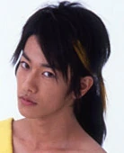
|
Immediately following the above "Kamen Rider Den-O" references, are references
to the pre-battle catchphrases for Momotaros, Urataros, Kintaros, and Ryotaros,
in that order. While three out of the four are them exactly or nearly exactly quoting
the catchphrase, the catchphrase for Kintaros is indirectly referenced, with Konata
shedding tears since that's what Kintaros makes his enemies do "'cause of his strength".


Ryotaro transforming into each of these forms and saying the catchphrase
can be viewed in the first 2 minutes and 10 seconds of this video:
https://www.youtube.com/watch?v=lkid2bOWu9Q
|
If Hiyori and Patty decided to go to stay on the current floor during the school infiltration,
and the protagonist guesses that the idea Konata came up with is that she'll write the script herself,
Konata brings up the fact that she was featured in Newtype's art corner.
Newtype is a Japanese anime and manga magazine, and Konata is not just making this up,
she actually did have art created by her featured in the real magazine in their June 2007 issue.
In the picture below, Konata's art is the one featuring Akira Kogami and Minoru Shiraishi.
|
If Hiyori and Patty decided to stay on the current floor during the school infiltration,
and the protagonist guesses that the idea Konata came up with is that she'll write the script herself,
Konata will showcase her drawing skills, resulting in her saying this line before beginning to draw.
It's a reference to what the protagonist Gulliver says in the anime "Fantascience World Gulliver Boy"
as he prepares his special attack, first saying "c'mon" repeatedly as he first builds up power, followed
by saying "here it comes" repeatedly as the attack starts to take form.
A clip of Gulliver performing his attack and saying these lines can be viewed here:
https://x.com/SERVO6pWWE/status/1098079780442787846
|
Following the above reference to "Fantascience World Gulliver Boy", this may seem a bit of a stretch,
but the protagonist saying "geh!" is actually a reference to the manga "Kinnikuman". The very specific
way that it's written in the original Japanese (ゲェーッ！) is associated with "Kinnikuman" as a common
interjection for when characters are surprised.

|
Following the above references related to Konata writing the script, the drawing Konata ends up making
is taken directly from the drawing she did of Tsukasa in a comic strip from the first volume of the Lucky Star manga.
|
Once Konata reveals her idea to have Hiyori and Patty join in with helping
the third year students with their preparations for the school festival, things quickly
devolve back into the otaku characters joking around with the above lines.
This is a reference to the manga "MMR: Magazine Mystery Reportage" about a group of reporters
investigating paranormal phenomena, as well as the prophecies made by Nostradamus to determine
if they are really true. MMR became well known online for its moments in which a character will
dramatically come to a conclusion, with the other characters responding in surprise.
Konata, Hiyori, Patty, and Kou are recreating one of the most iconic of such moments.
|
If the protagonist has doubts about Konata's plan due to it feeling like she's
exploiting Hiyori and Patty's weakness since they're desperate to have their event,
Konata will remind the protagonist that Miyuki's angry with them, leading to these lines.
Both of these lines are Konata comparing Miyuki to the villain Frieza from "Dragon Ball Z".
The first line about Miyuki having "two more transformations still remaining" comes from Frieza's
fight with Piccolo. Frieza is well-known for having many forms that he can take, each more
powerful than the last.
In the second line, Konata makes two quotes. The first, "you've made me angry", doesn't appear
to be a reference to any particular line from Frieza, though he does say something similar
after Gohan actually manages to hurt him despite Gohan being a child at the time.
The second quote, "my power level is 530,000" is from Frieza's fight against Nail,
where he states that number as his power level. Though it is later revealed
that this was only his power level in his current form at the time,
with later forms possessing much higher power levels.
|
Upon entering the gymnasium, if Hiyori and Patty went to the third year classrooms floor during their
school infiltration, Miyuki will be dressed up as the character Nanoha Takamachi as she appears in the anime
"Magical Girl Lyrical Nanoha StrikerS".
Miyuki is quoting what Nanoha says after completing her transformation into her battle outfit.
"StarS 01" is her call sign when acting as part of the "Riot Force 6" military unit.
|
Immediately following the previous reference, Miyuki says this line.
Miyuki is quoting the climax of Nanoha's fight against Fate Testarossa in the first
"Magical Girl Lyrical Nanoha" series, in which Nanoha goes all out and uses her signature move: Starlight Breaker.
This moment was also adapted in the first "Magical Girl Lyrical Nanoha" movie.
The scene can be viewed here, with the part where Nanoha uses Starlight Breaker starting
at the 3:30 mark.
https://www.youtube.com/watch?v=rV1a7LWozoY
|
Following the previous reference, the topic of Miyuki's chest comes up,
leading to Konata saying this. The line "a flat chest is a status symbol" was already
covered earlier in these notes, but this second instance of it is being pointed out for completeness sake.
|
The last of the references related to Miyuki dressed up as Nanoha happens here with the protagonist
making a direct reference to a specific episode. The episode he is talking about is episode 8 of
"Magical Girl Lyrical Nanoha StrikerS", in which "The White Devil Incident" occurs.
The White Devil Incident refers to a moment near the end of the episode, in which during combat training with Nanoha,
the characters Teana Lanster and Subaru Nakajima don't follow instructions and attempt to perform a dangerous
maneuver during the training. This maneuver ends up failing and Nanoha scolds them for their recklessness,
but Teana refuses to give up and keeps attacking, leading Nanoha to fire a powerful attack that knocks her
unconscious, forcing Subaru to watch.
The moment can be viewed here:
https://www.youtube.com/watch?v=ivYtq7Vx1n0
|

If Hiyori and Patty went to the third year classrooms during their school infiltration,
the events Hiyori and Patty suggest for the contest Miyuki wants them to plan have an
element in their CGs that requires understanding the terms "yuri" and "bara" to fully appreciate.
Yuri is a term used to refer to media featuring female-female homosexual relationships,
and it's later clarified that the "super intimate senpai-kouhai" pairings that would be
featured in Hiyori's proposed contest would both be girls, making it intended for an audience
that is into yuri.
However, this meaning of "yuri" is actually a secondary meaning of the word. Yuri's primary meaning
is as the Japanese word for "lily", as in the type of flower. This is why the flowers drawn on the chalkboard
in the CG for Hiyori's event are lilies.
Similarly, bara is a term associated with media featuring male-male homosexual relationships.
Also similarly, this is a secondary meaning of the word bara, with its primary meaning being as
the Japanese word for "rose", the type of flower. This is why the flowers drawn on the chalkboard
in the CG for Patty's event are roses, as she intends her event to involve male-male pairings.
This is also what Patty is getting at when she's talking about "surprises giving forth to a rose garden".
However, as an aside, there is an interesting what you may call "oversight" with this.
You may notice that Patty mostly talks about her love for media with male-male homosexual relationships
as "BL" (Boy's Love) and not "bara". This is because the two terms are not interchangeable.
Media categorized as "BL", as well as it's related term "yaoi", tend to be made to appeal to heterosexual women,
while "bara" is made with homosexual men as the intended audience.
As a result, the expression of love featured in works labeled as "BL" or "yaoi" tend to be more feminine
or mirror the kinds of dynamics seen in a stereotypical heterosexual relationship by having one of the men
take on the "feminine" role by being more submissive. This is why Patty's proposed event involves a kouhai
that is a "girl-at-a-glance", as he by being the younger person in the pairing makes him already well-suited
to being in the submissive/feminine role, which is further emphasized by having them look like a girl.
In contrast, "bara" media will tend to feature two men that are highly masculine with large masculine bodies.
All this is to say that Patty's proposed event doesn't really fall under what people consider "bara" to be,
and so the use of roses in the CG to invoke bara is arguably inaccurate.
|
If Hiyori and Patty stayed on the current floor during their school infiltration,
when Ayano is frustrated with the script and wants it to have more impact,
Hiyori makes the suggestion to make Sakura the main character instead of Shirou.
The Sakura they are referring to is Sakura Matou, one of the main female characters
of "Fate/Stay Night", which, as you may recall from Episode 1, is what the play is an adaptation of.
Sakura is generally a more minor character in the "Fate" and "Unlimited Blade Works" routes of the visual novel,
which is what the play seems to be primarily based on given what we see of it from Episode 1, so this is why
giving her a more prominent role in the play by making her the main character would be especially impactful.
|
If Hiyori and Patty stayed on the current floor during their school infiltration,
and if the protagonist agrees with Hiyori's suggestion of making Sakura the main character,
it'll lead to the above interaction between Hiyori and Patty.
The "Death Omen Star" is a reference to the series "Fist of the North Star",
in which it's said that if you can see this star, you will die within a year.
The star does exist in real life and is called "Alcor",
appearing much smaller and dimmer compared with its neighboring star, Mizar.
|
If Hiyori and Patty stayed on the current floor during their school infiltration,
and if the protagonist agrees with Patty's suggestion of making all the characters boys,
the resulting conversation will result in Kagami seeing the vision behind this wild idea,
comparing its appeal to that of the Takarazuka Revue.
Takarazuka Revue is a real Japanese musical theatre troupe that consists entirely of women.
Consequently, all the male roles in their productions are played by women as well.
While their productions do also have female roles, the women playing male roles,
known as "otokoyaku" (literally "male role" in Japanese) are a big part of the group's brand.
|
If Hiyori and Patty went to the gymnasium during their school infiltration,
when the protagonist and Konata are brought back to the gymnasium by Kagami,
Miyuki tells them to write a "death poem".
Death poems are an East-Asian tradition in which a person writes a poem shortly
before their death, with these poems often being the author reflecting on the fact
that they are about to die. It is similar to the concept of someone saying their "final words"
in which they make a statement that is meant to cap off their life in some way.
|

Following the above reference to death poems, when the protagonist and Konata reiterate
that they will be helping with the festival preparations, Miyuki tells them that they
can "stack stones in Sai no Kawara".
Sai no Kawara is a place in Buddhist mythology similar to Limbo in that it's a place
where the souls of children go after death as punishment for the sorrow their early death
brings to their parents. There, they build towers out of stones in order to try and attain salvation.
The line from Konata comes from a hymn about Sai no Kawara called the Jizo Wasan.
The passage the line is taken from is as follows:
"Saying prayers for the happiness of father, they heap the first tower;
"Saying prayers for the happiness of mother, they heap the second tower;
"Saying prayers for their brothers, their sisters, and all whom they
"loved at home, they heap the third tower."
You can learn more about Sai no Kawara here:
https://www.onmarkproductions.com/html/sai-no-kawara.html
|
In the Hiyori and Patty good endings, Hiyori and Patty will
asked to be called "Brigade Leader" and the above CGs will be shown.
Both the line and the CG are references to the series "The Melancholy of Haruhi Suzumiya",
in which the eccentric titular character, Haruhi Suzumiya, starts a club at her high school
called the "SOS Brigade" and declares herself the "Brigade Leader" (団長).
Additionally, Haruhi is known to give herself various titles throughout the series based
on the current goings-on, such as "Great Detective"(名探偵) and "Super Director" (超監督), often wearing
accompanying arm bands with the title written on it. The title on Hiyori's and Patty's armbands is one of
these titles Haruhi used, that being "Super Director", which she used when directing a movie for the school festival.
So given that Hiyori and Patty are directing an event at the school festival in these endings, the use of
this title is a fitting reference.

In the above picture, Haruhi's "Super Director" armband can be seen in the bottom right.
|
In the Kou good ending, Kou will suggest that the Fate play should be changed to focus on the story
between the protagonist, Shirou, and the character Archer. Archer is the servant of Rin Tohsaka,
but notably is also Shirou, but in an alternate timeline. This connection between the two characters
is a notable part of the "Unlimited Blade Works" route of "Fate/stay night" and is what
Kou is likely referring to as the thing to put more focus on in the play.
|
The background used for Hiyori, Patty, and Kou's event at the school festival
contains a painting of a man picking up some out-of-frame shiny object with the
text "Something... isn't there a weapon!?".
The person in the painting is Japanese voice actor Tomokazu Sugita, well known for
playing roles such as Kyon from "The Melancholy of Haruhi Suzumiya".
However, more specifically, the painting is a reference to a scene from episode 12
of the Lucky Star anime, in which Tomokazu Sugita, depicted as a store employee working
for Meito Anizawa, is asked to find something he can try to sell to a customer at Comiket.
The above line differs from what's in the painting due to me choosing to use the
translation used in the English dub, due to it being more accurate to the original Japanese line.
Incidentally, this line is also a reference to "Mobile Suit Gundam", as this is a notable line said
by the series protagonist, Amuro Ray.
Above, you can see the specific shot from this scene that the painting depicts, occuring just after
Tomokazu Sugita says the line, as he finds a card depicting Kyon from "The Melancholy of Haruhi Suzumiya".
The full scene from the Lucky Star anime can be viewed here:
https://www.youtube.com/watch?v=zYiojgrNcQ4&t=657s
|
In the Hiyori good ending, the doujinshi Konata and the protagonist receive from Hiyori
is called "Lily ★ Star", with the implication that the name was chosen for questionable
reasons. As you can probably guess if you have read the above note on yuri,
it's in reference to how the Japanese word for "lily" is "yuri", which has a secondary meaning
as the name of a genre of media featuring female-female homosexual relationships.
|
At the begining of the Hiyori Lucky Lucky Memorial route, the protagonist is in bed
recalling the final lines of the "Fate/stay night" play when a mysterious voice
says the final line of "I love you" out loud.
As discussed in the notes on Episode 1, this line comes from a scene near the end
of the "Fate" route where Saber and Shirou part ways.
The scene can be viewed here from 3:31:50 to 3:34:17
https://www.youtube.com/watch?v=lJp9cSF2ekg&t=12710
|
In the opening scene of the Hiyori Lucky Lucky Memorial route, Konata calls
Hiyori her Zhuge Liang.
As mentioned earlier in these notes, Zhuge Liang is a famous historical figure
in ancient Chinese history and is known for being a great military strategist.
|
In the opening scene of the Hiyori Lucky Lucky Memorial route,
Hiyori mentions that there is an anime adaptation of Fate while boasting
about her knowledge of the franchise.
At the time of writing these notes, there are many Fate animated series and movies
covering all routes of "Fate/stay night". However, at the time of Lucky Star: Ryouou Gakuen Outousai's
original release, there was only the 2006 anime series that mostly focused on the "Fate" route.
|
In the first lunch scene of the Hiyori Lucky Lucky Memorial route,
Hiyori gives the protagonist a paper bag filled with various Fate materials
including a "materials book" and the "Fate/stay night" manga.
The materials book Hiyori is referring to is likely "Fate/side side materiale",
which came when ordering the original "Fate/stay night" visual novel online and
contains various artwork and behind-the-scenes information about the developer, TYPE-MOON.
As for the manga, this is in reference to the 20 volume manga series based on
"Fate/stay night" that began in December 2005, though only five of its volumes
were released at the time of Lucky Star: Ryouou Gakuen Outousai's original release,
so Hiyori's paper bag likely would've only included those five at most.
|
This line from the night before the school festival scene of the
Hiyori Lucky Lucky Memorial route after Patty finds the protagonist and Hiyori
is a reference to a sexual innuendo contained within the first "Dragon Quest" videogame.
In the game, though normally the adventure consists of just a single hero that you play as,
there is a moment when you can talk to a certain woman who will then follow your character
around for a while. If you then stay at an inn while in this state, there is a special line of
dialogue you are told by the innkeeper: "Seems you had a good time last night", implying that
your character slept with the woman and may have performed sexual acts during the night.
To the best of my knowledge, this line is not present in English versions of the game.
However, despite the line not being very well known to English audiences, this line is rather
iconic in Japan, to the extent that Square Enix even published a manga whose name is literally
just this line, though it is known as "Rooming with a Gamer Gal" in English.
|
In the lead up to the Patty Lucky Lucky Memorial route, if the protagonist asks Patty if he would be a good fit
for the role of Shirou, Patty suggests that he would be better suited as Gilgamesh.
Gilgamesh is one of the antagonists of Fate/stay night, and is known as the "King of Heroes".
|
During the introductory morning scene of the Patty Lucky Lucky Memorial route, the protagonist says this line
as a "canned response" to Konata wanting to know what Patty told him in private.
"Continues on the web" is a set phrase that appears frequently in Japanese advertising on TV
and elsewhere that, as you might expect, encourages the viewer to visit the website for the thing
in question being advertised. This could be for things like a commercial that tells part of a story,
where you have to go to the website to see how things continue.
In the case of the protagonist saying this, he of course is using it as a cop-out to not actually
tell Konata anything, mimicking an advertisement that may use "continues on the web" at cliffhanger moments,
denying the viewer the satisfaction of immediately seeing how things get resolved.
|
In the Patty Lucky Lucky Memorial route, the role that Ayano gives Patty in the Fate play,
Taiga Fujimara, is Shirou's homeroom teacher and supposed caretaker. However, she is often more
like a freeloader that lives with Shirou. Still, she generally serves as an adult authority figure
that Shirou can turn to. This is why most of her scenes in the play are dialogues with Shirou.
|
In the Patty Lucky Lucky Memorial route, Ayano reveals that the person previously playing
Taiga prior to swapping her out for Patty was doing double duty, playing the role of Caster as well.
Caster is a class of servant in "Fate/Stay night" similar to characters like Saber and Archer,
but the actual character is named Medea and serves as an antagonist character.
The same actress playing both Medea and Taiga would have likely been quite awkward,
given that in the "Unlimited Blade Works" route of "Fate/stay night", which is one of the routes
the play adapts, Medea takes Taiga hostage. This is potentially one of the reasons why having
the same actress perform both roles would have been in conflict with Ayano's vision.
|
In the Patty Lucky Lucky Memorial route, during the scene where Patty is given the role of Taiga, the protagonist
asks Patty if she'll be fine reading the kanji in the script and offers to write furigana over the script as needed.
If you're at all familiar with the Japanese language, you will likely already understand
the concepts of kanji and furigana, but as a basic primer or refresher, there are three character sets
in the Japanese language: hiragana, katakana, and kanji.
Hiragana and katakana are native Japanese character sets that are phonetic in nature.
That is, each character has one consistent pronunciation. Hiragana and katakana
largely overlap in that most of the hiragana characters have a one-to-one match with
a specific katakana character, but are used in different contexts. Hiragana is mostly used for
writing many of the most common Japanese words, many words that originate from Japanese, and many
grammatical structures such as particles and auxiliary verbs. Katakana is mostly used for writing
loan words, primarily those that are not Chinese in origin. The hiragana and katakana character sets
are both made up of about 50 characters each, and due to their consistent pronunciation and overlap are often
learned fairly easily and quickly by most learners of Japanese.
However, the third set of characters, kanji, is a character set adapted from the characters used in Chinese and are
used to write the majority of nouns and adjectives and the stems of most verbs.
There are several thousand kanji, with there being around 3000 characters that you need to know to be able to read
the majority of Japanese written material. Additionally, these characters can have many different pronunciations
that results in learners of Japanese simply having to memorize each word along with its kanji and their pronunciation
in that word. This has resulted in kanji gaining a reputation for being very difficult for learners of Japanese to read.
This reputation is arguably a bit overstated, but is not entirely unfounded, as this is a significant factor in why
Japanese is considered one of the most difficult languages for a native English speaker to learn.
But anyway, this is why the protagonist asks Patty whether she can handle the kanji in the Fate play's script.
As for what "furigana" is, they are an aid that is added to some Japanese written material,
primarily that written for learners or Japanese children, that helps in reading words written in kanji
by placing the pronunciation of that word in hiragana beside or above the kanji version. Furigana is also
added in instances where a kanji word has an unconventional pronunciation or a pronunciation that otherwise
would not be likely known to the target audience.
So, when the protagonist offers to add furigana to the script to help Patty, he's offering to notate the script
with how to pronounce the kanji words she struggles with, as he'll know how to properly pronounce them.
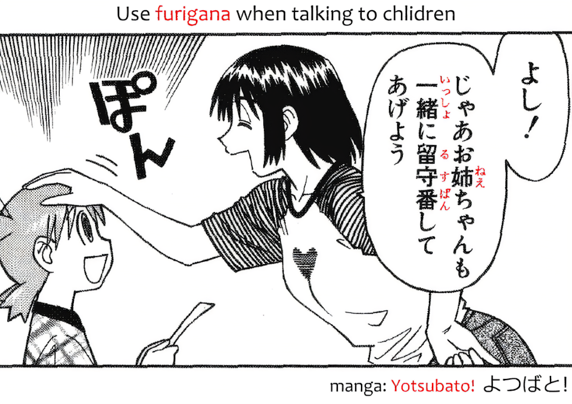
|
In the Patty Lucky Lucky Memorial route, when the protagonist receives a text from Patty,
what the protagonist is referring to by not having to input the kanji by hand isn't merely that she
doesn't have to handwrite the kanji, but is rerferring to how the way typing Japanese works is through
the use of an IME (input method editor). An IME is a piece of software built into many devices
that helps in entering text in certain languages.
The way it often works in Japanese is the user will simply type the words in their Romanized form
(i.e. how they are written using the Roman alphabet), and the IME will handle automatically converting
that text into hiragana. Additionally, as you type, a list of suggested words will appear, similar to autocomplete,
that you can select from to write words in kanji or katakana just by being able to recognize how it's written.
|
Once again, this is an instance of Patty saying something in English
followed by saying the same thing in Japanese. "Matte kudasai" means "please wait" in Japanese.
|
In the Patty Lucky Lucky Memorial route, the scene Patty is practicing on the night before
the school festival is a scene near the end of the first day of the "Fate" route of "Fate/stay night", in which
Taiga is admonishing Shirou for coming home late. Unlike many of the other parts of the Fate play
in this game, the lines were not copied one-for-one, but instead it just generally follows the flow
of the original scene. This is possibly due to Sakura not being a significant part of the play, as was
implied in one of the routes of Comic Festival, resulting in the scene having to be changed to be just
between Taiga and Shirou.
The scene in question can be viewed here from 1:03:50 to 1:06:12
https://www.youtube.com/watch?v=WtjrLUoRW5Q&t=3830s
|
In the Patty Lucky Lucky Memorial route, Patty's line that is shown during the Fate play
comes from a scene near the end of the fifth day of the "Fate" route of "Fate/stay night".
In this scene, Taiga fights against Saber to determine whether she can live with her and Shirou,
resulting in Taiga losing. She then breaks down in tears, saying the above line.
The scene in question can be viewed here from 1:47:24 to 1:51:03
https://www.youtube.com/watch?v=faA-i6yROJc&t=6444s
|
In the Hiyori mini scenario, Hiyori says that she has to go full "Shuraba Mode"
in order to get her submission done on time.
The term "shuraba" is similar to that of "crunch time" in English, though it is usually applied
to creative work specifically. In this state, workers will work with great intensity and long hours
in the final weeks or months of a project's development to get everything done.
Additionally, the reference to "Shuraba Mode" is likely also in reference to the visual novel "Comic Party",
as in that visual novel you play as a doujin artist who makes doujinshi for otaku conventions.
In the game, as a deadline approaches, you are sometimes given the option to enter "Shuraba Mode",
in which the protagonist will work extra hard on completing the doujinshi over the following days,
but it comes at great cost to his stamina.
Footage of "Shuraba Mode" in action in Comic Party can be seen here from 59:04 to 59:17.
https://www.youtube.com/watch?v=qwFWprHbSc8&t=3544s
|

Following the above mention of "Shuraba Mode" in the Hiyori mini scenario,
an explanation of the concept is given, which makes these historical references.
Again, it is helpful to understand that by "Shuraba Mode", we are really just talking
about the concept of "crunch time", just under a different name.
To provide some additional context about Matsuo Bashou and his most famous work,
"The Narrow Road to the Interior", it's worth knowing that it was his last major work,
with it being completed the same year as his death and published posthumously.
One could imagine Matsuo Bashou as having given the remainder of his life energy into completing it,
and this is what I think is being referred to in this explanation. Truthfully, I did not do particularly
extensive research into this topic, but as far as I can tell, while the creation of "The Narrow Road to the Interior"
was a laborious process taking many years and lots of refinement, I could find no explicit reference
to its creation having undergone any sort of "shuraba" or crunch time.
As for Murasaki Shikibu, she was a Japanese novelist, best known for "The Tale of Genji",
which is considered to be one of the first novels ever written and is quite long at 1100 pages.
Her reputation as one of history's first novelists is likely what the description is referring to
by saying she is believed to be the first person to use "Shuraba Mode" in Japan, as such a grand work
would have likely required some "shuraba" or crunch time, especially since, as with Matsuo Bashou,
she spent considerable time writing this novel and is believed to have either died not long after
its completion or possibly even had it finished by her daughter after her passing.
|
As part of the comic Hiyori is drawing in the Hiyori mini scenario, there's a scene
of Yutaka and Minami looking up into the night sky, with Yutaka being able to see
a small blue star beside the Big Dipper, known as the "Death Omen Star".
As mentioned earlier in these notes, the Death Omen Star is a reference to the series
"Fist of the North Star", in which being able to see this star is a sign that you will die within a year.
|
In the Hiyori mini scenario, there's a choice to have Hiyori
drink a pep-up drink called "Geass", resulting in the above lines.
The drink's name comes from the series "Code Geass", while the CG and line where Hiyori
makes a command is based on the "Geass" that the protagonist, Lelouch Vi Britannia, possesses.
Geass is a magical power in which by making direct eye contact with someone while stating a command,
can force that person to follow that command, no matter what it is. Hiyori's line is mimicking the wording
that Lelouch used when utilizing his Geass to make soliders shoot themselves with their guns.
A clip of Lelouch using his Geass can be seen here:
https://www.youtube.com/watch?v=t1ZVKmMyxP0
|
In the Hiyori mini scenario, as the effects of the "Geass" drink
start to wear off, Hiyori starts acting loopy, leading to her saying this line.
The line "let them drink drank" is derived from a quote often attributed to historical figure, Marie Antoinette,
that being "let them eat cake". This is a paraphrasing of what she had supposedly said in response
to hearing that peasants had no bread to eat, though it is debated whether she actually ever said this.
|
In the Patty mini-scenario, when Patty tells her friend that she loves Nanoha and wishes she
had a Device, she is referring to the tools used in the Nanoha series that are used in casting spells,
utilizing the user's magical abilities.
An example of a Device was seen in Episode 1, with Ayano cosplaying as Fate Testarossa Harlaown.
Fate's Device, Bardiche, made an appearance in that scene.
|
In the Patty mini-scenario, when she is talking to her friend about Evangelion action figures,
Patty recommends the "latest Super Alloy". Super Alloy is a brand name owned by figurine company
Comicave Studios to refer to figures made out of metallic alloys in order to be more sturdy
compared to plastic figures.
|
Here in the Patty mini-scenario, Patty says the name of the friend she is talking to,
that being "Lilith". You may be wondering whether Lilith is an existing character from Lucky★Star or a reference,
but as far as I know, she is not, and is original to this scene.
As an additional fun fact and oddity, though Patty says "Lilith" in her English voice acting (to the best of my hearing!),
the original Japanese version of this game provided a Japanese translation of what Patty is saying.
In that translation, they wrote her name as "リンダ" (Linda), so her name could either be Lilith or Linda
depending on which of the two you consider to be more trustworthy.
|
|
The song "Light My Heart on Fire" from the game's soundtrack is possibly a reference
to the name of the 1967 song "Light My Fire" by the American rock band "The Doors",
as the Japanese name of the song is "Light My Heart on Fire".
The song can be listened to here:
https://www.youtube.com/watch?v=qoX6AKuYWL8
|
|